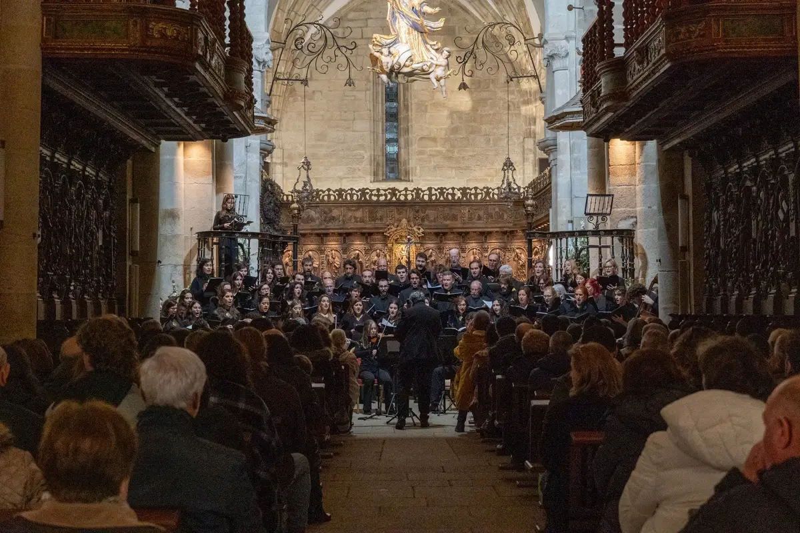

05 Associação cultural
EVPM
Site institucional do Ensemble Vocal Pro Musica, coro geracional sediado no Conservatório de Música do Porto, fundado em 1991. Não vende bilhetes — posiciona o ensemble.

01 O projeto
O que é
São três públicos: quem quer confirmar a agenda e sentir a qualidade artística antes de ir a um concerto, programadores culturais a avaliar o ensemble para festivais e cantores a pensar em entrar no coro.
A direção é editorial e contida — rigoroso, vivo, elegante. Espaço em branco como respiração, fotografia e imprensa a falar pelo ensemble, e a paleta do brand kit de 2026: cobre, marfim e carvão.
02 Funcionalidades
O que faz
- Agenda de concertos e arquivo com página própria por concerto
- Prémios internacionais e direção artística
- Galeria de fotografia
- Página de alumni
- Faixa de críticas de imprensa em movimento
- Metadados por página para pesquisa e partilha
03 Tecnologia
A stack
Frontend
- React 18 + TypeScriptbase da aplicação
- Vite (SWC)build rápido
- React Routerpáginas carregadas sob pedido
Interface
- Tailwind CSS + shadcn/uicomponentes com os tokens do brand kit
- Framer Motionanimações
Conteúdo
- Sanityconcertos, prémios, alumni e galeria editáveis
Infra e qualidade
- Lovablealojamento
- Vercel Analytics + Speed Insightstráfego e desempenho real
- Vitest + Testing Librarytestes
04 Porquê assim
Decisões técnicas
Marca traduzida em tokens
As cores do brand kit estão ligadas aos tokens semânticos da interface. Nenhum componente usa a cor diretamente.
Uma página por concerto
O arquivo gera uma página para cada concerto, o que dá ao ensemble um historial pesquisável no Google.
Divisão de código por página
Cada página é carregada à parte, para a homepage abrir depressa no telemóvel.